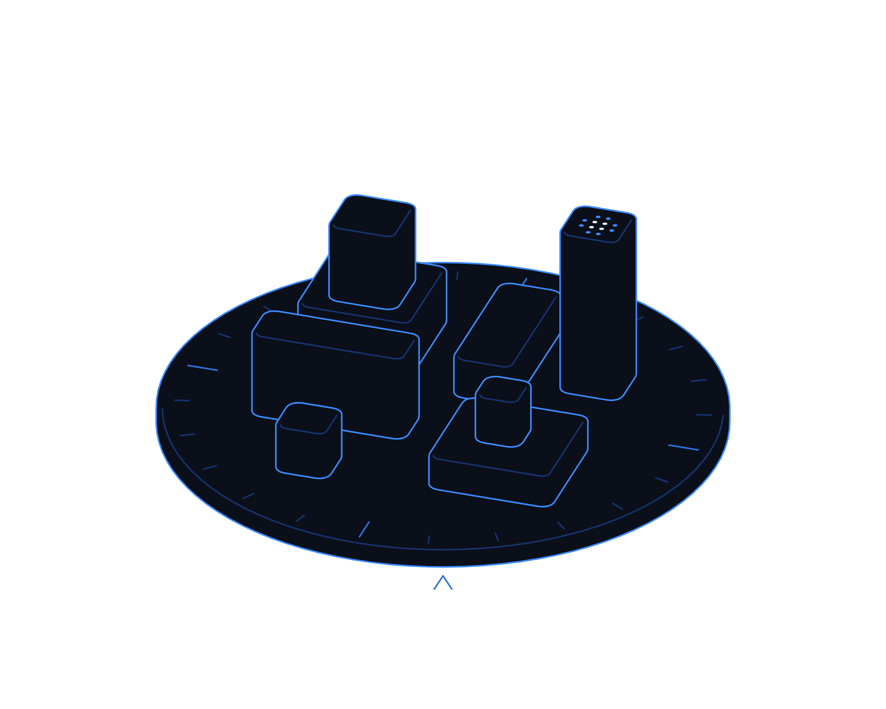
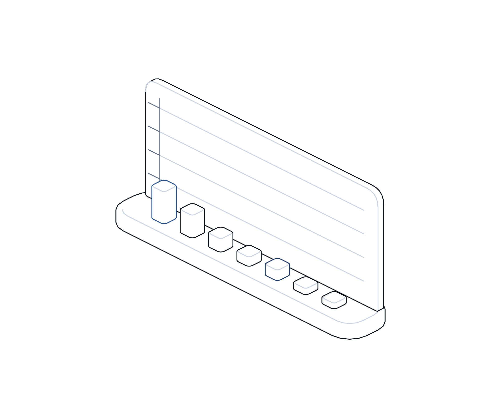

Count the Cost


Hot topics · Playbook
No. 14 · November 2026
Playbook No. 14 · Cyber risk in business terms
Count the
cost.
Ahold Delhaize expects its October cyber incident to cut quarterly sales by up to €250 million. Here is how to put your own number on cyber risk, and use it.
Transputec playbooktransputec.com
Inside
Contents
How to put a business price on cyber risk, test it with finance, check your insurance, rank resilience spending by value and report it to the board, with a plan for this week, this month and this quarter.
Foreword03
Introduction04
01Price the risk06
02Rehearse and insure11
03Invest and report15
Sources23
 Contents
ContentsCount the Cost · Hot Topics · Playbook02 / 24
Foreword
Your cyber risk has a price. Most boards have never seen it.
On 4 November 2026 Ahold Delhaize, owner of Albert Heijn, Delhaize and Food Lion, said its October cyber incident is expected to reduce fourth-quarter net sales by €200 million to €250 million and operating income by €75 million to €100 million. The cost of the response and remediation itself, it said, would be marginal.1
That is the pattern of the biggest incidents of the last two years. Marks and Spencer, Co-op and Jaguar Land Rover each lost far more through disrupted trading than through IT recovery.2,3,4 Yet most boards still see cyber risk as an IT budget line: tools, staff, perhaps a fine.
This playbook is about closing that gap. It shows how to express cyber risk as lost revenue per day, how to test it with finance, what to ask your insurer, how to rank resilience spending and how to report it so the board can make real decisions.
The Transputec team
Transputec
Foreword Count the Cost · Hot Topics · Playbook03 / 24
Introduction
Cyber risk is a trading risk.
The question that matters is not how much an attack would cost to clean up. It is how much trade you would lose while you cleaned it up, and how quickly you could get it back.
Measure in money
Express the risk as lost sales and margin per day of disruption, not as a heat map or a maturity score.
Rehearse with finance
Run outage scenarios with the people who own the numbers, so the estimate becomes a shared view.
Spend where it shortens downtime
Rank resilience investments by the days of disruption they avoid, multiplied by what a day costs.
Introduction Count the Cost · Hot Topics · Playbook04 / 24
The IT bill is the small one. The big one is the trade you cannot do.
Every major incident since 2025 has shown the same thing. The organisations that recover best know their number before they need it.
Introduction Count the Cost · Hot Topics · Playbook05 / 24
01
Part 01
Price
the risk.
Turn a technical worry into a figure the board can weigh against other risks.
01Why boards underestimate
02Four questions that set the price
03A simple cost model
04Business impact analysis
Part 01 Count the Cost · Hot Topics · Playbook06 / 24
Why it matters
Why boards still underestimate cyber risk
Revenue stops when systems stop. Rent, wages and energy do not.
Ask most boards what a serious cyber attack would cost and the answer starts with IT: forensic investigators, rebuilding servers, specialist lawyers, perhaps a regulatory fine. Those costs are real, but they are not where most of the money goes.
Ahold Delhaize is the latest example. It took systems offline to contain an incident in October, and expects to lose €200 million to €250 million of sales and €75 million to €100 million of operating income as a result. Response and remediation costs are expected to be marginal.1
M&S first estimated a £300 million hit to operating profit, against direct costs later put at about £136 million.5,2 Co-op estimated £285 million of lost revenue.3 JLR booked £196 million of cyber costs, while the Cyber Monitoring Centre estimated a £1.9 billion impact on the UK economy.4,6
The reason is simple arithmetic. When ordering, picking or production stops, revenue stops, but rent, wages and energy do not. Most of the lost revenue falls straight through to profit, and customers who go elsewhere do not all come back.
Few organisations measure this. In the government's 2025/26 survey, only 31% of UK businesses had board-level responsibility for cyber security and 25% had a formal incident response plan.7 Self-reported costs were low, which tells you more about measurement than about risk.
The fix is not a new tool. It is a number: what a day without each critical service would cost. Once the board has that number, cyber decisions become ordinary business decisions about risk and return.
Price the risk Count the Cost · Hot Topics · Playbook07 / 24
The method
Four questions that set the price
You do not need an actuarial model to start. You need honest answers to four questions for each critical service.

01
What stops?
List the services that take or fulfil orders, make products, pay people or serve customers, and the systems each depends on.
02
For how long?
Estimate a realistic outage, not a best case. Recent retail incidents ran from two weeks to more than six.
03
What does a day cost?
Lost sales by channel, lost margin, waste, compensation and extra staff costs, agreed with finance.
04
What would shorten it?
Tested backups, manual workarounds, segmented networks and rehearsed decisions. These become your investment list.
Price the risk Count the Cost · Hot Topics · Playbook08 / 24
The model
A simple cost-of-downtime model
Six lines, each owned by someone who knows the numbers. Estimate a range for a two-week outage, not a single figure.
Cost line
How to estimate it
Owner
Lost sales
Average daily sales by channel times days disrupted, less sales that simply shift later.
Finance with sales
Lost margin
Lost sales times contribution margin, plus fixed costs that carry on regardless.
Finance
Supply chain and waste
Perishable or time-critical stock at risk, penalty clauses, partners who cannot operate.
Operations
Response and recovery
Forensics, rebuild, advisers and overtime. Ask your provider for realistic ranges.
IT lead
Customers and regulatory
Refunds, compensation, notification, legal advice and possible regulatory action.
Legal and customer
Insurance recovery
What the policy would actually pay after waiting periods and sub-limits.
Finance with broker
Price the risk Count the Cost · Hot Topics · Playbook09 / 24
Business impact analysis
A business impact analysis in six steps
Done properly once, then refreshed each year or after any major change.
01
List critical services
Start with the ten or so activities that earn revenue or keep you legal. Name an owner for each.
02
Map dependencies
For each service, record the systems, data, suppliers and people it needs.
03
Set tolerances
Agree how long each service can be down before damage becomes unacceptable.
04
Cost the outage
Use the six-line model to put a daily cost range on each service.
05
Test the workarounds
Check what can continue manually, for how long, and who knows how.
06
Agree the gaps
Where the tolerance is shorter than the realistic recovery time, you have an investment case.
Price the risk Count the Cost · Hot Topics · Playbook10 / 24
02
Part 02
Rehearse
and insure.
Test the number with the people who own it, then check who pays when it happens.
01Running a scenario with finance
02Three scenarios to borrow
03Cyber insurance
Part 02 Count the Cost · Hot Topics · Playbook11 / 24
Scenario exercise
Running a scenario exercise with finance
Ministers asked leading UK companies in October 2025 to plan and exercise how they would keep operating and rebuild after a destructive incident.8 This is how to do it in half a day.
Set the scenario
Core systems taken offline to contain an attack, for two weeks. Stores, sites and offices remain open.
Bring the numbers
Finance brings daily sales and margin by channel. Operations brings stock, staffing and supplier dependencies.
Run the clock
Walk through day one, day three, week one and week two. Record what keeps trading and what stops.
Find the gaps
Note missing workarounds, unclear decisions and suppliers you could not reach.
Agree actions
Turn each gap into an owned action with a date, and a revised cost estimate for the board.
Invite the finance director and the head of operations, not only IT. The exercise fails if no one in the room owns the numbers.
Rehearse and insure Count the Cost · Hot Topics · Playbook12 / 24
Three scenarios
Three scenarios to borrow
Retail and distribution
Ordering and warehouse systems offline for two weeks
What stops
Online orders, replenishment, electronic pricing and loyalty. Stores open but shelves thin.
What to price
Daily sales by channel, fresh waste, refunds for cancelled orders and overtime.
Workaround to test
Manual replenishment lists for core lines and a simple fallback for pricing.
Board number
Lost margin per day times realistic days to normal trading.
Manufacturing
Plant and planning systems shut down for checks
What stops
Production scheduling, parts ordering, shipping documents and supplier payments.
What to price
Lost output, idle labour, penalty clauses and support suppliers may need.
Workaround to test
Safe manual restart of priority lines and a paper process for dispatch.
Board number
Contribution lost per day plus supplier support, for three to six weeks.
Professional services
Email, documents and billing unavailable for a week
What stops
Client work, deadlines, time recording and invoicing.
What to price
Unbilled time, missed deadlines, client credits and delayed cash collection.
Workaround to test
A clean communication channel and access to critical documents offline.
Board number
Daily billable value at risk plus the cash flow delay.
Rehearse and insure Count the Cost · Hot Topics · Playbook13 / 24
Cyber insurance: read it against your scenario
A policy is only as useful as its fit with the outage you are most likely to suffer.
What it should cover
Business interruption from your own outage, ideally a key supplier's too, plus response and legal costs.
What to check
Waiting periods before interruption cover starts, sub-limits, how lost profit is calculated and any exclusions that could apply.
What the evidence says
Only 10% of UK businesses hold a specific cyber policy.7 M&S claimed its £100 million maximum against about £136 million of direct costs.2
What good looks like
Your modelled two-week loss sits next to the policy limit, and the board knows the gap it is carrying.
Owner
Finance director, with the broker and IT lead
Bring this to the monthly review, with a date for each action.
Rehearse and insure Count the Cost · Hot Topics · Playbook14 / 24
03
Part 03
Invest
and report.
Spend where it shortens downtime, and report risk in a language the board already uses.
01Ranking resilience investments
02Reporting to the board
03Week, month and quarter
04Pitfalls
Part 03 Count the Cost · Hot Topics · Playbook15 / 24
Prioritise
Rank resilience spending by value
Plot each proposal by how much outage cost it avoids and how easily you can deliver it. Start top right.
Plan and fund
High value, harder
Network segmentation, rebuilding critical systems for faster recovery, a second route for key suppliers.
Start here
High value, easier
Tested offline backups, manual workarounds for top services, strong sign-in for admins, NCSC Early Warning.
Question it
Low value, harder
Large tool purchases that do not shorten an outage or make one less likely in your scenario.
Keep tidy
Low value, easier
Housekeeping that helps but does not move the board number. Do it, but do not lead with it.
Ease to deliver →
↑ Downtime cost avoided
Invest and report Count the Cost · Hot Topics · Playbook16 / 24
Reporting
Five rules for reporting cyber risk to the board
The Cyber Governance Code of Practice asks boards to own cyber risk.9 These rules give them something to own.
01
Lead with money
Show the estimated loss range for a plausible severe outage, by critical service.
02
Show the trend
Report whether that range is shrinking quarter by quarter, and why.
03
Tie spending to days
Every resilience proposal states the downtime it avoids and the value of those days.
04
Report the tested, not the planned
Restores, workarounds and exercises count only when they have been tried.
05
Name the residual risk
State the gap between modelled loss and insurance, and ask the board to accept or reduce it.
Invest and report Count the Cost · Hot Topics · Playbook17 / 24
The plan
This week, this month, this quarter
A realistic sequence for a mid-sized UK organisation. Larger groups run it per business unit.
This week
Name the board sponsor. List the ten critical services and their system owners.
Chief executive
This week
Sign up to NCSC Early Warning. Confirm offline backups exist and when they were last restored.
IT lead
This month
Cost a two-week outage for each critical service with the six-line model.
Finance director
This month
Send the scenario to your broker and ask what the policy would pay.
Finance with broker
This quarter
Run a half-day scenario exercise with finance and operations. Agree owned actions.
Chief operating officer
This quarter
Present the loss range, gaps and ranked investments to the board.
Board sponsor
Invest and report Count the Cost · Hot Topics · Playbook18 / 24
Pitfalls
Five ways cost estimates go wrong
Each makes the number look smaller than it is.
01
Counting only IT
Forensics and rebuilds are the visible part. Lost trading is usually larger.
02
Assuming a best-case outage
Plan for weeks, not days. Recent retail incidents took two weeks or more to contain.
03
Ignoring containment
Your own decision to switch systems off will stop trading. Price it in.
04
Forgetting suppliers
A supplier's outage can stop you just as surely as your own.
05
Trusting the policy limit
Waiting periods and sub-limits can leave a large gap. Read the wording.
Remember
A number that is roughly right and owned by finance is worth more than a precise one nobody believes.
Invest and report Count the Cost · Hot Topics · Playbook19 / 24
Before you start
Questions for your board, suppliers and insurer
Ask them this month. Write down the answers and who gave them.
For the board
?What would a week without our core systems cost us in sales and margin?
?When did we last rehearse a destructive incident with finance in the room?
?Which resilience investment would shorten an outage most?
For suppliers and the insurer
?How quickly could you restore the service we depend on, and have you tested it?
?Would you tell us within hours if you were attacked?
?What would our policy pay for a two-week outage, and after what wait?
Invest and report Count the Cost · Hot Topics · Playbook20 / 24
Checklist
Do you know your number?
Tick what is in place today. Anything blank is your next step.
A named board sponsor for cyber risk
With the authority to call an exercise.
Critical services listed with owners
And the systems each depends on.
A daily cost of downtime for each
Agreed with finance, as a range.
Tested offline backups
Restored within the last quarter.
Manual workarounds for top services
Written down and tried.
Insurance checked against the scenario
Waiting periods and sub-limits understood.
A scenario exercise in the last 12 months
With finance and operations present.
Invest and report Count the Cost · Hot Topics · Playbook21 / 24
Glossary
Words worth knowing
Business impact analysis
A structured look at which services matter most, what they depend on and what an outage would cost.
Business interruption cover
Insurance that pays for lost profit and extra costs while operations are disrupted.
Containment
Action to stop an attack spreading, often by taking systems offline.
Contribution margin
Revenue minus the costs that vary with sales. The profit lost when a sale is lost.
Cost of downtime
Lost sales, lost margin and extra costs for each day a service is unavailable.
Early Warning
A free NCSC service that alerts organisations to potential attacks on their networks.
Impact tolerance
The longest a service can be disrupted before the harm becomes unacceptable.
Offline backup
A copy of data kept where an attacker on your network cannot reach or change it.
Scenario exercise
A structured rehearsal of an incident, run in real time or step by step.
Waiting period
The time an insurance policy requires before interruption cover starts to pay.
Glossary Count the Cost · Hot Topics · Playbook22 / 24
Sources
Sources and notes
Sources were accessed in November 2026. Where reports differ, we say so in the text. Early reporting on live incidents can change.
1
Ahold Delhaize, Q3 2026 results and updated 2026 guidance reflecting cybersecurity incident, 4 Nov 2026, https://newsroom.aholddelhaize.com/ahold-delhaize-reports-resilient-q3-2026-results-and-updates-2026-guidance-to-reflect-business-disruption-caused-by-recent-cybersecurity-incident/
2
The Register, M&S pegs cyberattack cleanup costs, 5 Nov 2025, https://theregister.com/2025/11/05/ms_pegs_cyberattack_cleanup_costs/
3
Co-op, Co-op navigates headwinds and looks forward with confidence, clarity and purpose, 26 Mar 2026, https://www.co-operative.coop/media/news-releases/co-op-navigates-headwinds-and-looks-forward-with-confidence-clarity-and
4
JLR, JLR performance impacted in challenging quarter, 14 Nov 2025, https://media.jlr.com/corporate/news/2025/11/jlr-performance-impacted-challenging-quarter
5
The Register, M&S cyberattack disruption (fiscal 2025 results), 21 May 2025, https://www.theregister.com/2025/05/21/ms_cyberattack_disruption/
6
The Record, Jaguar Land Rover cyberattack economic impact, 22 Oct 2025, https://therecord.media/jaguar-land-rover-cyberattack-economic-impact
7
DSIT, Cyber security breaches survey 2025/2026, 30 Apr 2026, https://www.gov.uk/government/statistics/cyber-security-breaches-survey-20252026/cyber-security-breaches-survey-20252026
8
GOV.UK, Ministerial letter on cyber security to leading UK companies, 13 Oct 2025, https://www.gov.uk/government/publications/ministerial-letter-on-cyber-security-to-leading-uk-companies/ministerial-letter-on-cyber-security
9
techUK, Government publishes Cyber Governance Code of Practice, 8 Apr 2025, https://www.techuk.org/insights/news/government-publishes-cyber-governance-code-of-practice
Sources Count the Cost · Hot Topics · Playbook23 / 24
Know your number
before you need it.
Transputec helps UK organisations put a price on cyber risk, rehearse how they would keep trading through an outage and invest where it shortens downtime most.
Book a cyber resilience reviewtransputec.com
Read the companion report
Companion report · The €250 Million Question
Transputec · Hot Topics · No. 14